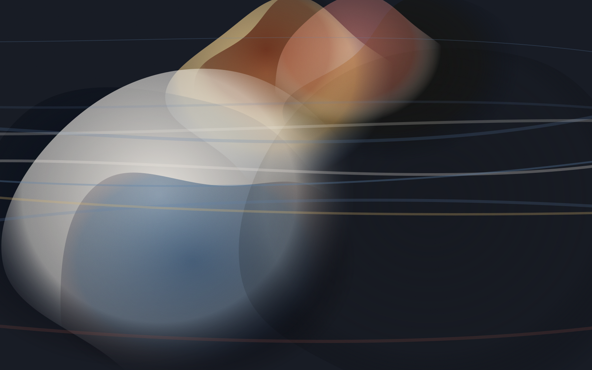
Toronto · Working since 2014
Quiet people,
loud weather.
Sam Wolff makes drawings, comics and paintings about the second or two after something goes wrong. Brush and India ink, oil built in thin layers, and short-run risograph editions — all of it made in one third-floor room above a bakery.
Selected work
View all twelve →
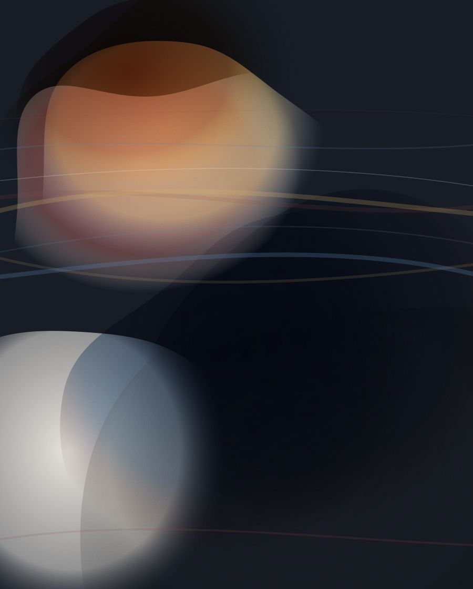
Paintings · 2024Sister Moth
Oil on linen, 120 × 90 cm

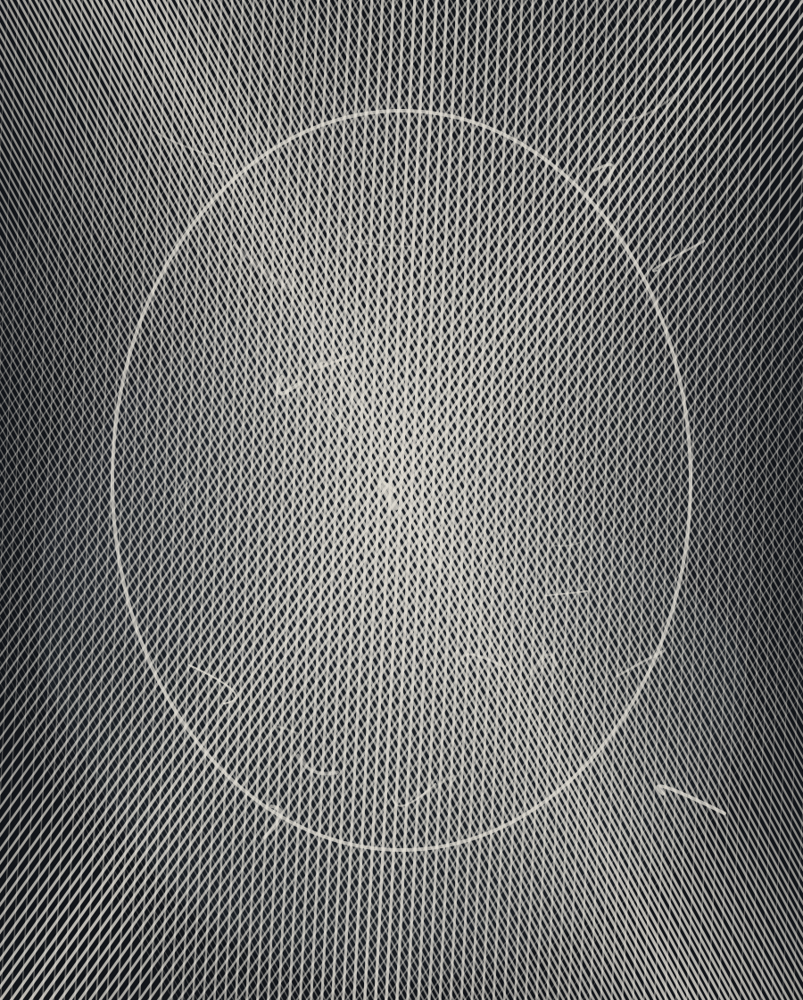
Drawings · 2025Nightwatch
Brush and India ink on cotton rag

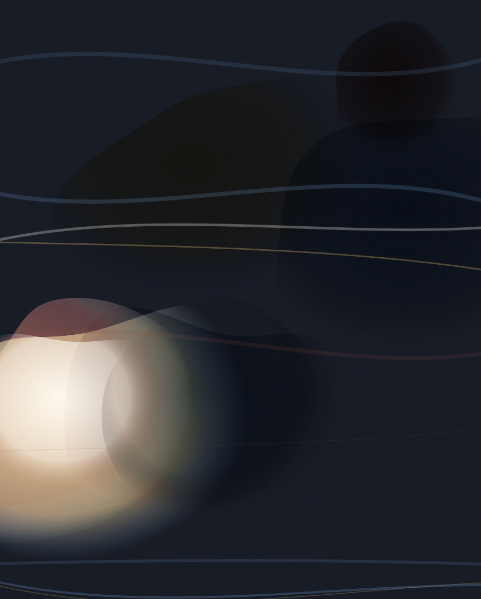
Paintings · 2025Marrow
Oil and cold wax on panel, 100 × 80 cm

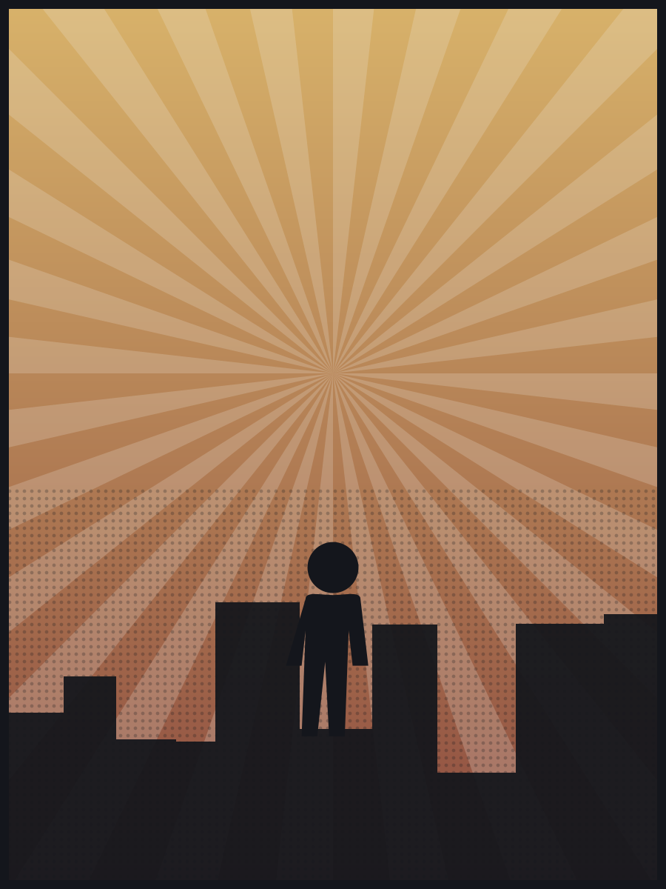
Comics · 2025Hollow Kings — Page 4
Ink, digital colour

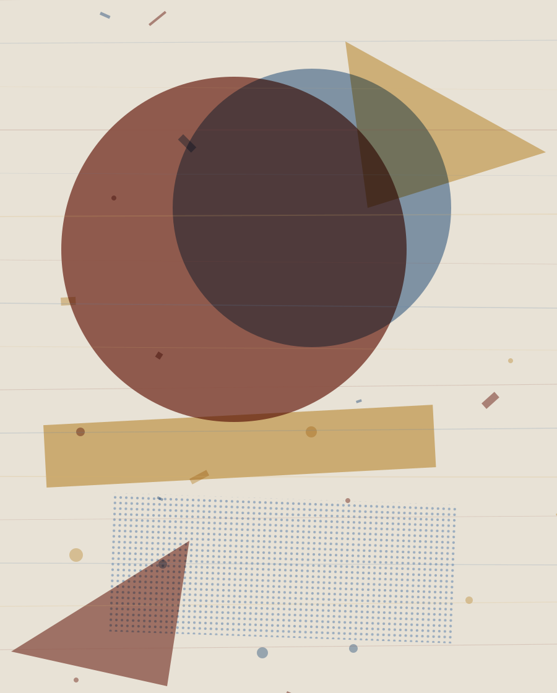
Prints · 2025Broadcast
Two-colour risograph, edition of 40
The studio
One room, four disciplines, the same question in each.
Drawings finished in a single sitting so the first decision stays visible. Paintings scraped back until the surface remembers something. Comic pages lettered by hand so the words have to fit the room the drawing left them. Editions pulled two colours at a time, slightly misregistered, on purpose.
Years in the studio
Self-published books
Commission slots a year
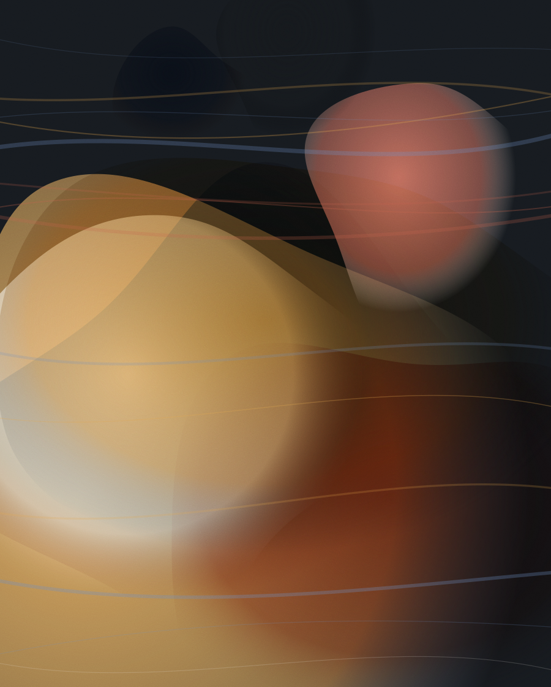
Full index
2022–2026
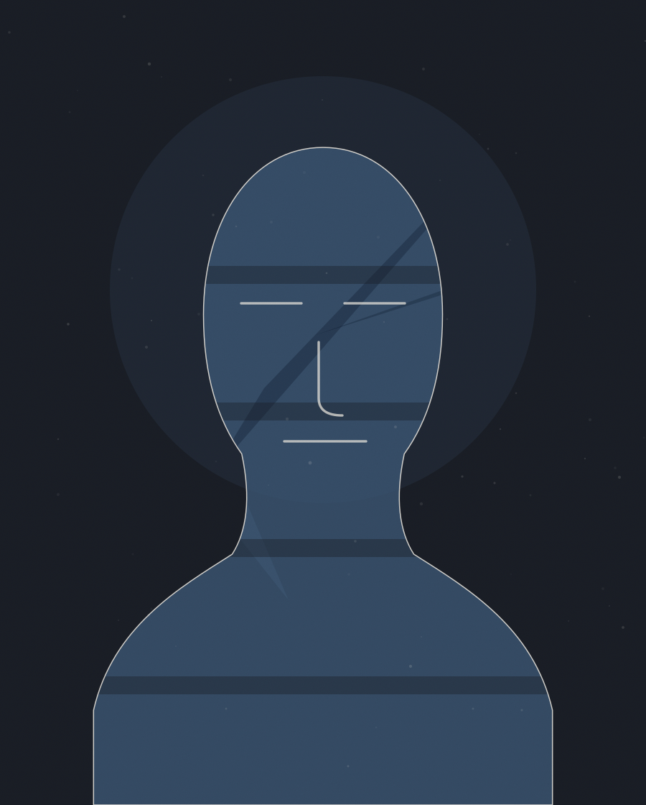
Drawings · 202405BroadcastPrints · 202506The Long Way Down — Cover
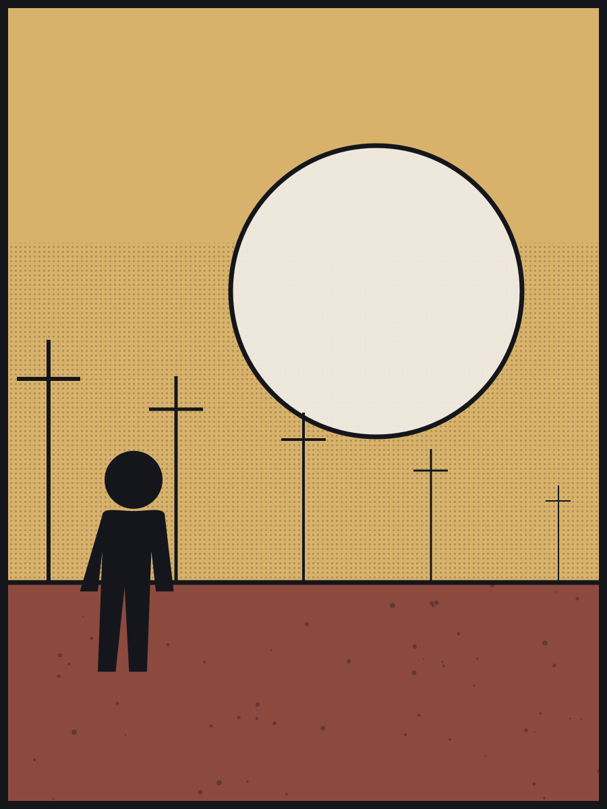
Comics · 202307MarrowPaintings · 202508The Cartographer
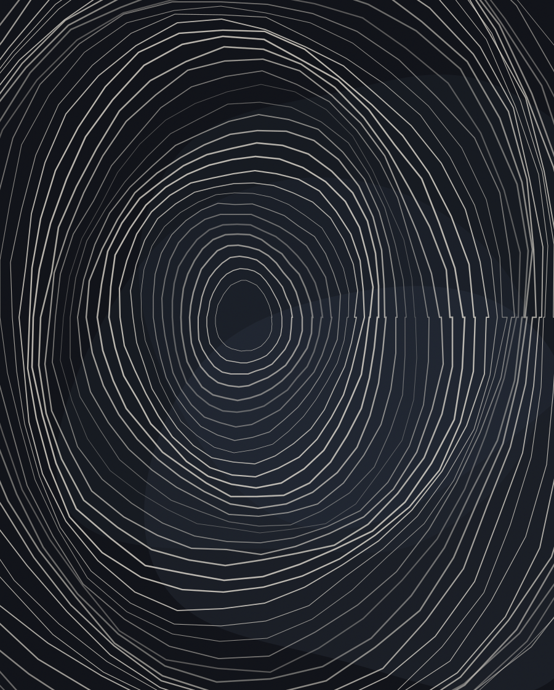
Drawings · 202309Portrait of E.W.
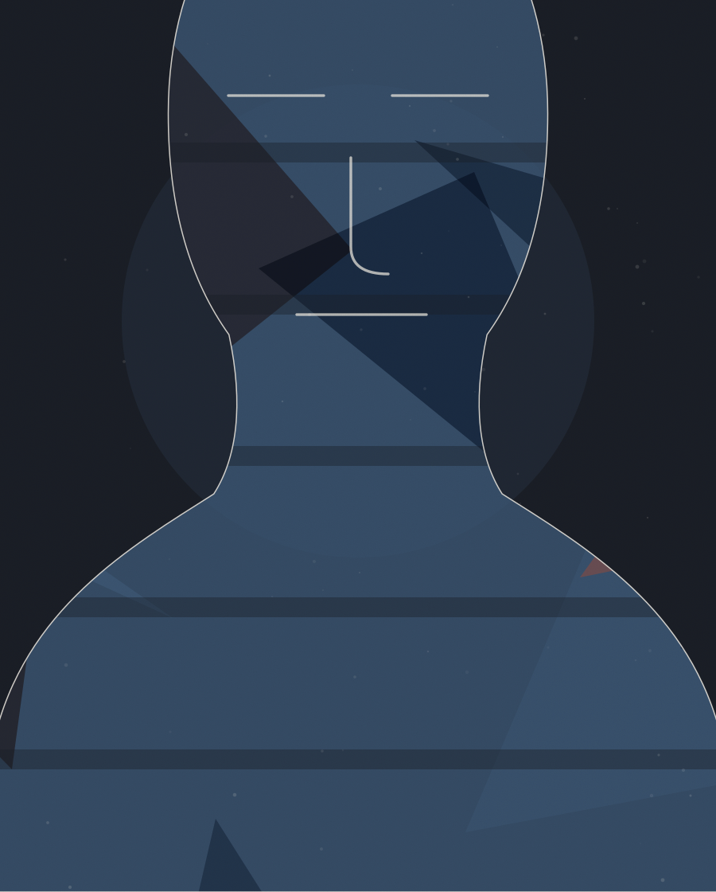
Paintings · 202410Fanfare
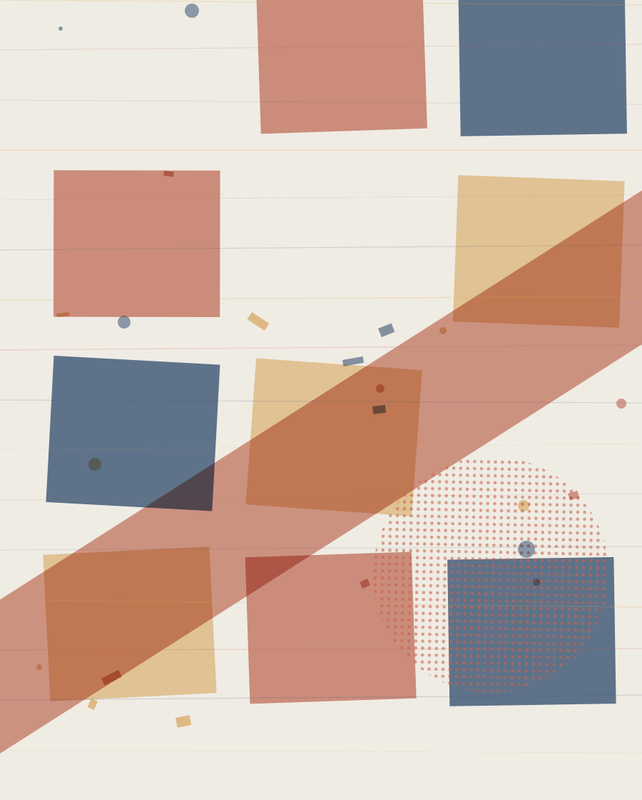
Prints · 202411UndertowPaintings · 202212Six Panels for a Missing Hour

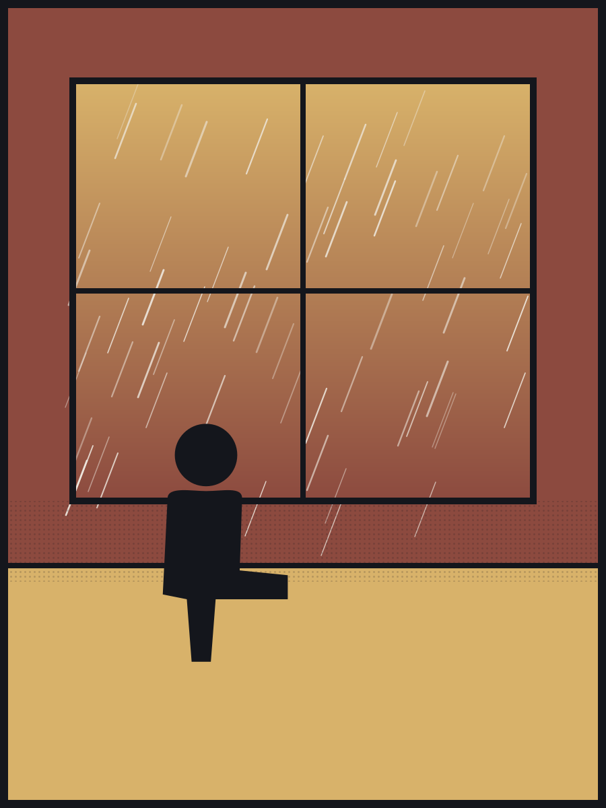
Comics · 2022